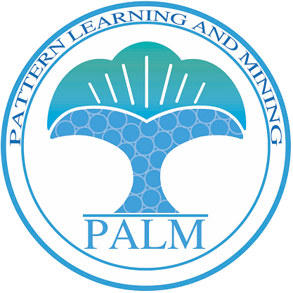
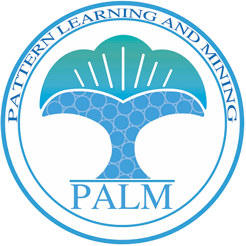
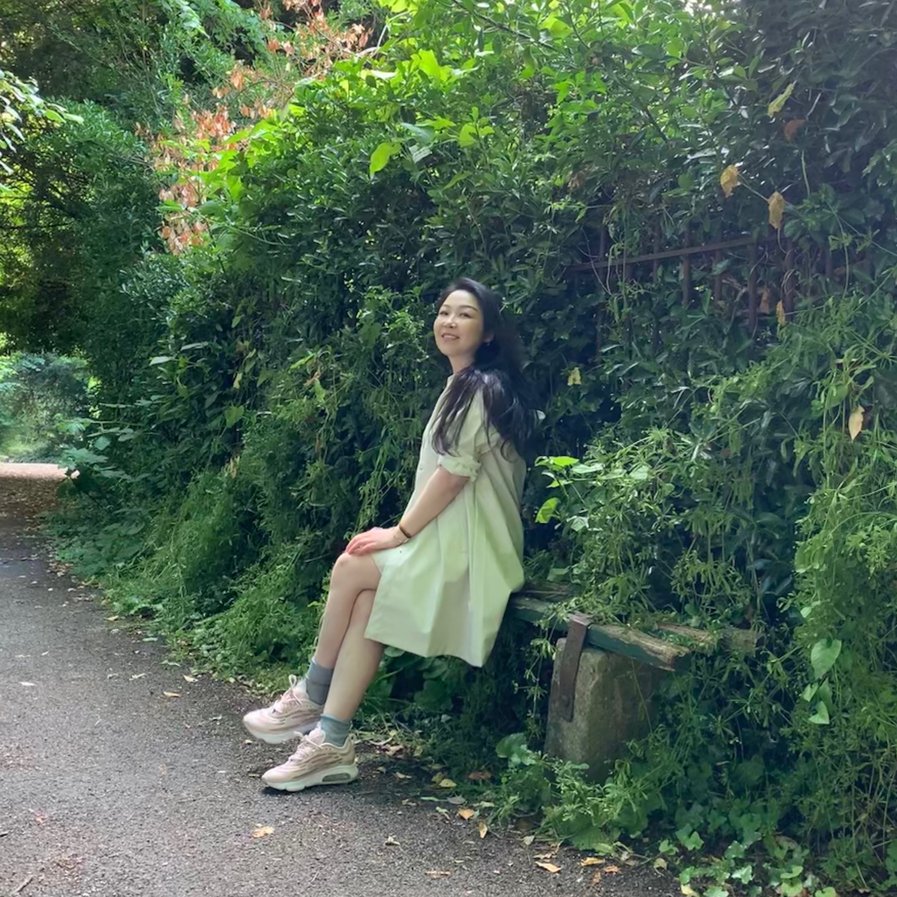
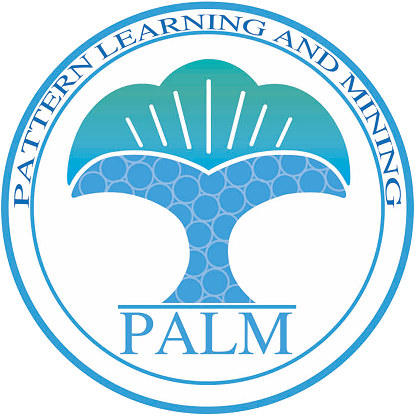

Yiguo Qiao
Yiguo Qiao
Yiguo Qiao
Ph.D., Assistant Professor
PAttern Learning and Mining (PALM) Lab
School of Computer Science and Engineering, Southeast University
Email: yqiao AT seu.edu.cn
Office: Room 508, Building of Computer Science, Jiulonghu Campus, Southeast University, Nanjing, China
欢迎2023年入学的研究生与我邮件联系！
Biography
Yiguo Qiao is currently an Assistant Professor in the PALM Lab of School of Computer Science and Engineering at Southeast University. From 2019 to 2022, she was a Research Associate in the CAMERA centre and the Pering Lab at the University of Bath in U.K.. She received the B.E. and Ph.D. degrees from Xidian University in 2010 and 2018, respectively, her PhD in the IPIU Lab was supervised by Prof. Licheng Jiao.
Yiguo’s research interests cover the fields of multimodal visual perception, computer vision and machine learning, specifically focusing on multimodal image processing and their applications in multimedia, smart healthcare, etc..
For more information, you may click to drop into her personal homepage.
Selected Publications
[1] Y. Qiao, L. Jiao, W. Li, C. Richardt and D. Cosker, Fast, High-Quality Hierarchical Depth-Map Super-Resolution, In: Proceedings of the 29th ACM International Conference on Multimedia (ACM MM'21), Chengdu, China, 2021, pp. 4444-4453. [Project]
[2] D. Egan, G. Fletcher, Y. Qiao; D. Cosker and R. McDonnell, How to Train Your Dog: Neural Enhancement of Quadruped Animations, In: Proceedings of the 14th ACM SIGGRAPH Conference on Motion, Interaction and Games (ACM MIG'21), Virtual conference, pp. 1-7.
[3] G. Fletcher, Y. Qiao, R. Fribourg, J. Deane, R. McDonnell and D. Cosker, Exploring the Perception of Quadruped Motion Retargeting, the 14th ACM SIGGRAPH Conference on Motion, Interaction and Games (ACM MIG'21), Virtual conference, 2021. Poster
[4] Y. Qiao, L. Jiao, X. Tang, W. Li and D. Cosker, High-Quality Depth Up-Sampling via a Supervised Classification Guided MRF Model, Pattern Recognition Letters (PRL), 2020, 138: 315-320.
[5] Y. Qiao, L. Jiao, S. Yang and B. Hou, A Novel Segmentation based Depth Map Upsampling, IEEE Transactions on Multimedia (TMM), 2019, 21(1): 1-14.
[6] Y. Qiao, L. Jiao, S. Yang, B. Hou and Jie Feng, Color Correction and Depth-Based Hierarchical Hole Filling in Free Viewpoint Generation, IEEE Transactions on Broadcasting(TBC), 2019, 65(2): 1-14.
[7] Y. Qiao, L. Jiao and B. Hou, High-Quality Depth Up-Sampling Based on Multi-Scale SLIC, Electronics Letters (EL), 2018, 54(8): 494-496.
[8] Y. Qiao and C. Jung, Dictionary Based Hole Filling with Assistance of Depth, In: Proceedings of the 2014 IEEE International Conference on Multimedia and Expo (ICME'14), Chengdu, China, pp. 1-6.
Patents
1. 焦李成；乔伊果；候彪；杨淑媛；刘红英；曹向海；马文萍；马晶晶；张丹；霍丽娜，引入颜色校正的自由视点图像合成方法，2016-05-19，中国，ZL201610334492.7
2. 焦李成；乔伊果；侯彪；杨淑媛；刘红英；曹向海；马文萍；马晶晶；张丹；霍丽娜，基于最短联合路径的深度图上采样方法，2016-05-19，中国，ZL201610334077.1
3. 郑喆坤；焦李成；薛飞；孙天；乔伊果，一种基于视差最小可察觉误差模型的感知立体视频编码，2014-05-30，中国，ZL201410240167.5
Projects
1. Engineering and Physical Sciences Research Council, CAMERA Mocap，2020.11-2025.10，参与
2. 国家自然科学基金青年项目，高光谱遥感空谱宽度学习的高效分类算法研究，2019.01-2021.12，参与
3. Innovate UK, The Rheumatoid Arthritis Flare Up Profiler, 2018.11-2021.01，参与
4. 国家自然科学基金面上项目，3DTV中编码效应消除和高质量双目视图生成研究，2013.01-2016.12，参与